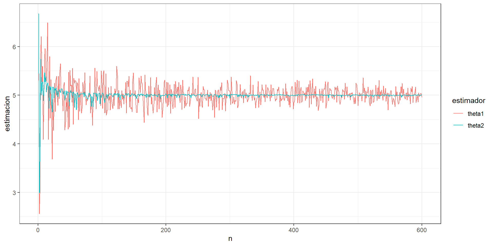
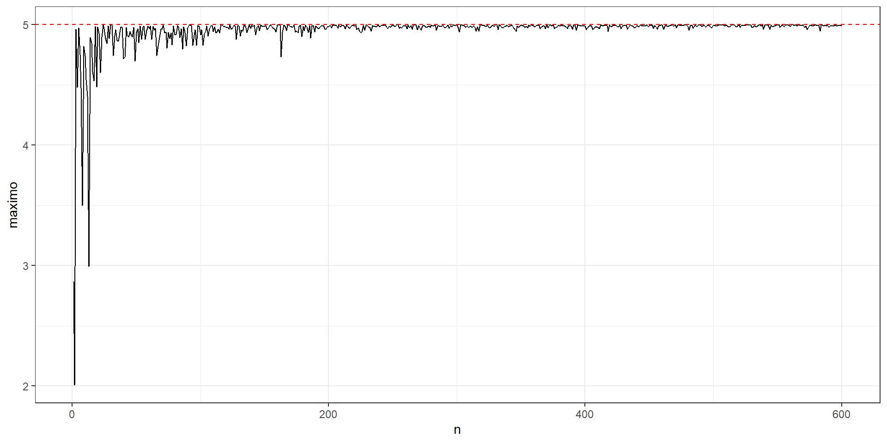

Estimación Puntual2
![]()
¿Qué vamos a discutir hoy?
- Consistencia
- Suficiencia
Consistencia
Ejemplo.
Sea \(X_{1}, X_{2}, ... , X_{n}\) una muestra aleatoria tal que \(X_{j} \sim Unif(0,\theta)\) y sean \(\overline{X}\) y \(X_{(n)}\) estimadores de \(\theta\).
Podemos encontrar que \(E(\overline{X}) = \frac{\theta}{2}\) y \(E(X_{(n)}) = \frac{n\theta}{n+1}\), por lo que \(\overline{X}\) y \(X_{(n)}\) son estimadores sesgados. No obstante podemos construir estimadores insesgados a partir de ellos que queden de la forma \(\hat{\theta}_{1} = 2\overline{X}\) y \(\hat{\theta}_{2} = \frac{n+1}{n}X_{(n)}\), respectivamente.
También podemos encontrar que la variancias de estos dos estimadores son las siguientes:
\(Var(\hat{\theta}_{1}) = \frac{\theta^2}{3n} \qquad Var(\hat{\theta}_{2}) = \frac{\theta^2}{n(n+2)}\)
El interés ahora yace en ver si estos estimadores se aproximan cada vez más al valor verdadero de \(\theta\) conforme aumentamos el tamaño de muestra y obtenemos más información. Y si ambos cumplen esto también nos podría interesar cuál lo hace de manera más rápida.
Haciendo una simulación, con \(\theta\) = 5, podemos observar que ambos estimadores convergen a \(\theta\) conforme el tamaño de muestra va aumentando. Podemos decir que \(\hat{\theta}_{1}\) y \(\hat{\theta}_{2}\) son estimadores consistentes para estimar \(\theta\).

Definición 2.6: Se dice que un estimador \(\hat{\theta}\) es consistente para estimar \(\theta\) ( \(\hat{\theta}\) converge en probabilidad a \(\theta\) ) si \(\forall \varepsilon>0\) se cumple que: \[\lim_{n \to +\infty}P\left(\left|\hat{\theta}-\theta\right|\leq \varepsilon\right) = 1\]
O lo que es equivalente: \[\lim_{n \to +\infty} P\left(\left|\hat{\theta}-\theta\right|> \varepsilon\right) = 0\]
Se puede denotar con la definición de la convergencia en probabilidad,
\[\hat{\theta} \stackrel{p}{\longrightarrow} \theta.\]
Teorema 2.3: Si \(\lim\limits_{n \to +\infty} \mathrm{ECM}(\hat{\theta})=0\) entonces \(\hat{\theta}\) es consistente para estimar \(\theta\).
Prueba:
La Desigualdad de Markov establece que si \(X\) es una v.a. tal que \(\operatorname{Pr}(X \geq 0)=1\). Entonces para cada número real \(t>0\), se tiene que
\[\begin{equation} \operatorname{Pr}(X \geq t) \leq \frac{E(X)}{t}. \end{equation}\]Tome \(X=|\hat{\theta}-\theta|^2\). Si \(\hat{\theta}\) es una v.a. que cumple que \(\operatorname{Var}(\hat{\theta})\) existe. Entonces para cada \(\varepsilon>0\)
\[\operatorname{P}(|\hat{\theta}-\theta| \geq \varepsilon) = \operatorname{P}(|\hat{\theta}-\theta|^2 \geq \varepsilon^2) \leq \frac{\mathbb{E}[(\hat{\theta}-\theta)^2]}{\varepsilon^2}=\frac{\operatorname{ECM}(\hat{\theta})}{\varepsilon^{2}}.\] Finalmente, se tiene que
\[\lim_{n \to +\infty}\operatorname{P}(|\hat{\theta}-\theta| \geq \varepsilon) \leq \frac{1}{\varepsilon^{2}} \cdot \lim_{n\to\infty}\operatorname{ECM}(\hat{\theta})=\frac{1}{\varepsilon^{2}} \cdot 0=0.\]
Consistencia con estimadores insesgados
Teorema 2.4 Si \(\hat{\theta}\) es un estimador de \(\theta\) entonces \(\hat{\theta}\) es un estimador consistente si:
- \(\hat{\theta}\) es insesgado para \(\theta\), y
- \(\lim\limits_{n \to +\infty} Var(\hat{\theta}) = 0\).
Prueba: Ejercicio.
Ejemplo.
Sea \(X_{1}, X_{2}, ... , X_{n}\) una muestra aleatoria tal que \(X_{j} \sim Unif(0,\theta)\) y sean \(\hat{\theta}_{1} = 2\overline{X}\) y \(\hat{\theta}_{2} = \frac{n+1}{n}X_{(n)}\) dos estimadores de \(\theta\). Demuestre que estos estimadores son consistentes para estimar \(\theta\).
Solución.
Ya sabemos que \(\hat{\theta}_{1}\) y \(\hat{\theta}_{2}\) son estimadores insesgados de \(\theta\), por lo que se cumple la primera condición del Teorema 2.4.; solo nos hace falta demostrar la segunda propiedad:
\[\lim_{n \to +\infty}Var(\hat{\theta}_{1}) = \lim_{n \to +\infty}\frac{\theta^2}{3n} = 0\]
\[\lim_{n \to +\infty}Var(\hat{\theta}_{2}) = \lim_{n \to +\infty}\frac{\theta^2}{n(n+2)} = 0\]
Ambos estimadores son insesgados, con varianza que tiende a cero. Por lo tanto son consistentes para estimar \(\theta\).
OJO: ¿ El estadístico \(X_{(n)}\) es consistente?
Respuesta: Si, pero es sesgado.
\[B(X_{(n)}) = \frac{n\theta }{n+1} - \theta\] \[Var(X_{(n)}) = E\left(X_{(n)}^2\right) - E\left(X_{(n)}\right)^2 = \frac{n }{n+2}\theta^2 - \frac{n^2}{(n+1)^2} \theta^2 \]
Tarea: Pruebe que \(\displaystyle \lim_{n \to +\infty} \operatorname{ECM}(X_{(n)})=0\)
Si observamos el gráfico de \(X_{(n)}\) notamos su consistencia pero sin ser insesgado. Esto significa que existen estimadores sesgados y consistentes.

A continuación demostraremos que \(X_{(n)}\) es consistente para \(\theta\) por medio de la definición.
Ejemplo.
Sean \(X_{1}, X_{2}, ... , X_{n}\) una muestra aleatoria tal que \(X_{j} \sim Unif(0,\theta)\) y \(X_{(n)}\) un estimador de \(\theta\). Demuestre que \(X_{(n)}\) es consistente para estimar \(\theta\).
Solución.
Como \(X_{(n)}\) es un estimador sesgado para \(\theta\) no podemos hacer uso del Teorema 2.4. Sin embargo, podemos mostrar con el teorema 2.3 o bien por la definición de consistencia. Como esta nos pide encontrar probabilidades y sabemos que \(X_{(n)}\sim Potencial(n,\theta)\) vamos a recordar la función de distribución de \(X_{(n)}\):
\(F_{X_{(n)}}(x) = \begin{cases} 0\quad si \quad x \leq 0 \\ \left(\frac{x}{\theta}\right)^{n} \quad si\quad 0<x<\theta \\ 1\quad si\quad x \geq \theta \end{cases}\)
Con esto podemos desarrollar la probabilidad en la definición:
\(P\left(\left|X_{(n)}-\theta\right|\leq \varepsilon\right) = P\left(-\varepsilon \leq X_{(n)}-\theta\leq \varepsilon\right) = P\left(\theta - \varepsilon \leq X_{(n)} \leq \theta + \varepsilon\right) =\) \(F_{X_{(n)}}(\theta + \varepsilon) - F_{X_{(n)}}(\theta - \varepsilon)\)
Sabemos que \(F_{X_{(n)}}(\theta + \varepsilon) = 1 \quad \forall \varepsilon > 0\) ya que \(\theta + \varepsilon > \theta\). No obstante, dependiendo del valor de \(\varepsilon\) puede que \(\theta - \varepsilon\) sea menor a 0 o esté entre 0 y \(\theta\), por lo que \(F_{X_{(n)}}(\theta - \varepsilon)\) puede tomar distintos valores dependiendo de \(\varepsilon\):
\(F_{X_{(n)}}(\theta - \varepsilon) = \begin{cases} \left(\frac{\theta - \varepsilon}{\theta}\right)^{n} \quad si \quad 0 < \varepsilon < \theta \\ 0 \quad si \quad \varepsilon \geq \theta \end{cases}\)
Por lo tanto, aplicando la definición, obtenemos:
\(\lim_{n \to +\infty} P\left(\left|X_{(n)}-\theta\right|\leq \varepsilon\right) = \lim_{n \to +\infty}\left(F_{X_{(n)}}(\theta + \varepsilon) - F_{X_{(n)}}(\theta - \varepsilon)\right)\)
\(= 1 - \lim_{n \to +\infty}F_{X_{(n)}}(\theta - \varepsilon) =\begin{cases} 1 - \lim_{n \to +\infty}\left(\frac{\theta - \varepsilon}{\theta}\right)^{n} \quad si \quad 0 < \varepsilon < \theta \\ 1 \quad si \quad \varepsilon \geq \theta \end{cases} = 1 \quad \forall \varepsilon > 0\)
Como se cumple la definición entonces concluimos que \(X_{(n)}\) es un estimador consistente para \(\theta\).
Teorema 2.5 Suponga que \(\hat{\theta}\) es un estimador consistente para estimar \(\theta\) y que \(\hat{\phi}\) es un estimador consistente para \(\phi\), entonces:
\(\hat{\theta} \pm \hat{\phi}\) es consistente para estimar \(\theta \pm \phi\)
\(\hat{\theta} \cdot \hat{\phi}\) es consistente para estimar \(\theta \cdot \phi\)
\(\frac{\hat{\theta}}{\hat{\phi}}\) es consistente para estimar \(\frac{\theta}{\phi}\)
Si \(g(\cdot)\) es una función continua en \(\theta\) entonces \(g(\hat{\theta})\) es consistente para estimar \(g(\theta)\), es decir, si \(\hat{\theta} \stackrel{p}{\longrightarrow} \theta\) entonces \(g(\hat{\theta}) \stackrel{p}{\longrightarrow} g(\theta)\).
Ejemplo.
Sea \(X_{1}, X_{2}, ... , X_{n}\) una muestra aleatoria de una población Normal con media \(\mu\) y variancia \(\sigma^2\).
- Demuestre que \(S^2\) es un estimador consistente para \(\sigma^2\).
Solución: Ya conocemos que \(E(S^2) = \sigma^2\) por lo que se cumple que \(S^2\) es insesgado para \(\sigma^2\). También sabemos que \(Var(S^2) = \frac{2\sigma^4}{n-1}\), por lo tanto se cumple que \(\lim_{n \to +\infty}Var(S^2) = 0\). Por lo tanto \(S^2\) es un estimador consistente para \(\sigma^2\).
- Pruebe que \(S\) es un estimador consistente para estimar \(\sigma\).
Solución: Sea \(g(x) = \sqrt{x}\) una función continua si \(x \geq 0\), por lo tanto: \(g(S^2) = S\) es consistente para estimar \(g(\sigma^2) = \sigma\)
Teorema 2.6.: Teorema de Slutsky. Suponga que \(U_n\) es una variable aleatoria que tiene distribución que converge a una \(N(0,1)\) cuando \(n \to +\infty\). Además \(W_n\) es una variable aleatoria que converge en probabilidad a 1. Se cumple, entonces, que la variable aleatoria \(\frac{U_n}{W_n}\) tiene distribución que converge a una \(N(0,1)\), cuando \(n \to +\infty\).
Ejemplo. Sea \(X_{1}, X_{2}, ... , X_{n}\) una muestra aleatoria de una población con media \(\mu\) y variancia \(\sigma^2\). Demuestre que \(V = \frac{\overline{X}-\mu}{\frac{S}{\sqrt{n}}}\) converge a una \(N(0,1)\) cuando \(n \to +\infty\).
Solución. Sea \(U_n = \frac{\overline{X}-\mu}{\frac{\sigma}{\sqrt{n}}}\). Sabemos que por el Teorema del Límite Central \(U_n\) converge en distribución a una \(N(0,1)\) cuando \(n \to +\infty\).
Sea \(W_n = \frac{S}{\sigma}\). Podemos demostrar que \(S\) es consistente para estimar \(\sigma\) para cualquier población, por lo que \(\frac{S}{\sigma}\) converge en probabilidad a 1 (“es consistente para estimar 1”).
Entonces se cumple que \(V = \frac{\overline{X}-\mu}{\frac{S}{\sqrt{n}}} \xrightarrow{\text{d}} N(0,1)\) cuando \(n \to +\infty\).
Suficiencia
Hasta el momento la selección de estimadores ha sido intuitiva, sin embargo en esta sección utilizaremos la propiedad de suficiencia para determinar estimadores a partir de ciertos estadísticos. Se dice que un estadístico es suficiente si hace uso de toda la información de la muestra. Ejemplos: \(\overline{X}, S^{2}, X_{(n)}\).
Definición 2.7. Suficiencia. Si \(X_{1}, X_{2}, ... , X_{n}\) es una muestra aleatoria sobre una población con parámetro desconocido \(\theta\) y función de densidad/probabilidad \(f_{X}(x|\theta)\). Se dice que un estadístico \(U = g(X_{1}, X_{2}, ... , X_{n})\) es suficiente para estimar \(\theta\) si la distribución condicional de \(X_{1}, X_{2}, ... , X_{n}\) dado \(U=u\) es independiente de \(\theta\). Es decir, \(P(X_{1}, X_{2}, ... , X_{n} \vert U =u)\) no depende de \(\theta\).
De otra forma, se puede decir que un estadístico \(U = T(X_{1}, X_{2}, ... , X_{n})\), de una muestra aleatoria \(X_{1}, X_{2}, ... , X_{n}\), es suficiente para estimar \(\theta\) si no se puede encontrar otro estadístico que realice una mejor reducción de los datos que la que realiza \(U\). Es decir, el estadístico suficiente mínimo logra explicar toda la información del parámetro que se presenta en la muestra aleatoria.
Ejemplo: Sea \(X_{1}, X_{2}, ... , X_{n}\) una muestra aleatoria tal que \(X_{j} \sim Bernoulli(p)\). Pruebe que \(U = \sum_{j=1}^{n} X_{j}\) es suficiente para estimar \(p\).
Solución: Sabemos que la función de probabilidad de una Bernoulli viene dada por la siguiente expresión:
\(f_{X}(x|p) = \begin{cases} p^{x}\left(1-p\right)^{1-x} \quad si \quad x \in \left\lbrace 0,1\right\rbrace \\ 0 \quad en \quad otros \quad casos \end{cases}\)
También sabemos de antemano que la suma de Bernoulli es una Binomial, por lo que \(U \sim Bin(n,p)\), por lo que tiene la siguiente función de probabilidad:
\(f_{U}(u|p) = \begin{cases} \binom{n}{u}p^{u}\left(1-p\right)^{n-u} \quad si \quad u \in \left\lbrace0,1,2,...,n\right\rbrace \\ 0 \quad \text{en otros casos} \end{cases}\)
Ahora tenemos que encontrar la función de probabilidad condicional de \(X_{1}, X_{2}, ... , X_{n}\) dado \(U=u\), que por lo visto en cursos anteriores sabemos que es:
\[f(x_{1}, ... , x_{n} | U = u) = \frac{f(x_{1}, ... , x_{n}, u)}{f_{U}(u)}\]
En este caso el numerador es la función de probabilidad conjunta de \(X_{1}, X_{2}, ... , X_{n}\) y \(U\), pero al estar este en términos de toda la muestra aleatoria entonces quedamos con solo la función de probabilidad conjunta de \(X_{1}, X_{2}, ... , X_{n}\), \(f(x_{1}, ... , x_{n})\). Recordemos que bajo independencia \(f(x_{1}, ... , x_{n}) = \prod_{j=1}^{n}f_{X_{j}}(x_{j}|p)\). Esta función también lleva el nombre de función de verosimilitud y se denota como \(\mathcal{L}(x_{1}, ... , x_{n}|p)\) o también solo como \(\mathcal{L}(p)\).
\[\mathcal{L}(x_{1}, ... , x_{n}|p) = \prod_{j=1}^{n} p^{x_{j}}\left(1-p\right)^{1-x_{j}}= p^{\sum_{j=1}^{n}x_{j}}\left(1-p\right)^{n-\sum_{j=1}^{n}x_{j}} = p^{u}\left(1-p\right)^{n-u}.\]
Suficiencia
Por lo tanto, \(f(x_{1}, ... , x_{n} | U = u) = \frac{p^{u}\left(1-p\right)^{n-u}}{\binom{n}{u}p^{u}\left(1-p\right)^{n-u}} = \frac{1}{\binom{n}{u}}\)
Como vemos, esta función condicional no depende de \(p\), por lo que decimos que \(U\) es suficiente para estimar \(p\).
Ejemplo: Sea \(X_{1}, X_{2}, ... , X_{n}\) una muestra aleatoria de una población Uniforme en el intervalo \((0,\theta)\). Demuestre que el máximo muestral es un estimador suficiente para \(\theta\).
Solución: Ya habiamos demostrado con anterioridad que para este caso \(U = X_{(n)} \sim Potencial(n,\theta)\), por lo que conocemos su función de densidad:
\(f_{U}(u) = \frac{nu^{n-1}}{\theta^n}\)
Con esto podemos encontrar la función de densidad marginal:
\(f(x_{1}, ... , x_{n} | U = u) = \frac{\theta^{-n}}{\frac{nu^{n-1}}{\theta^n}} = \frac{1}{nu^{n-1}}\)
Como esta expresión no depende de \(\theta\) entonces decimos que el máximo muestral es suficiente para estimar \(\theta\).
Técnicas para demostrar suficiencia
- Técnica de factorización
- Técnica de la familia exponencial.
Teorema 2.7: Técnica de factorización. Si \(U\) es un estadístico definido sobre una muestra aleatoria \(X_{1}, X_{2}, ... , X_{n}\) de una población con parámetro desconocido \(\theta\) y \(\mathcal{L}(X_{1}, X_{2}, ... , X_{n}|\theta) = \mathcal{L}(\theta)\) es la función de verosimilitud entonces \(U\) es suficiente para \(\theta\) si y solo si existen funciones \(g(u,\theta)\) y \(h(x_{1}, x_{2}, ... , x_{n})\) tal que \(\mathcal{L}(\theta) = g(u,\theta) \cdot h(x_{1}, x_{2}, ... , x_{n})\) donde \(g(\cdot)\) depende de \(X_{1}, X_{2}, ... , X_{n}\) solo por medio de \(U\) y \(h(\cdot)\) no depende de \(\theta\).
Ejemplo: Sea \(X_{1}, X_{2}, ... , X_{n}\) una muestra aleatoria tal que \(X_{j} \sim Bernoulli(p)\). Pruebe que \(U = \sum_{j=1}^{n} X_{j}\) es un estadístico suficiente mínimo para \(p\).
Solución: En el caso de una muestra aleatoria Bernoulli, su función de verosimilitud viene dada por
\[\mathcal{L}(p) = \prod_{j=1}^{n} p^{x_{j}}\left(1-p\right)^{1-x_{j}} = p^{\sum x_{j}}\left(1-p\right)^{n-\sum x_{j}} = p^{u}\left(1-p\right)^{n-u}\]
Si tomamos \(g(u,p) = p^{u}\left(1-p\right)^{n-u}\) y \(h(x_{1}, x_{2}, ... , x_{n}) = 1\) podemos ver que se cumple el teorema anterior por lo que queda demostrado que \(U = \sum_{j=1}^{n} X_{j}\) es un estadístico suficiente mínimo para \(p\).
Ejemplo: Sea \(X_{1}, X_{2}, ... , X_{n}\) una muestra aleatoria de una población Poisson con media \(\lambda\). Encuentre un estadístico suficiente mínimo para \(\lambda\).
Solución: Primero debemos encontrar la función de verosimilitud para una muestra aleatoria Poisson,
\[\mathcal{L}(\lambda) = \prod_{j=1}^{n} \frac{\lambda^{x_{j}}e^{-\lambda}}{x_{j}!} = \frac{\lambda^{\sum x_{j}}e^{-n\lambda}}{\prod x_{j}! }\]
Si tomamos \(U = \sum_{j=1}^{n} X_{j}\) entonces podemos observar que \(g(u,\lambda) = \lambda^{u} e^{-n\lambda}\) y \(h(x_{1}, x_{2}, ... , x_{n}) = \frac{1}{\prod x_{j}! }\) cumplen que su producto sea igual a la verosimilitud, por lo que \(U = \sum_{j=1}^{n} X_{j}\) es un estadístico suficiente mínimo.
Ejemplo: Sea \(X_{1}, X_{2}, ... , X_{n}\) una muestra aleatoria de una población uniforme en el intervalo \((0,\theta)\). Demuestre que el máximo muestral es un estimador suficiente para \(\theta\) por técnica de factorización.
Solución: Como el dominio de la función de densidad depende del parámetro de interés, vamos a introducir el concepto de la función indicadora. Para valores \(a<b\): \[I_{[a, b]}(y)=\left\{\begin{array}{lc} 1, & \text { si } a \leq y \leq b, \\ 0, & \text { otros casos. } \end{array} \right.\] De esta forma, la función de densidad de una uniforme en el intervalo \((0,\theta)\) se puede expresar como \[f(y \mid \theta)=\frac{1}{\theta} I_{[0, \theta]}(y).\]
\[ \Rightarrow L(\theta)=\frac{1}{\theta^n} \prod\limits_{i=1}^n I_{[0, \theta]}\left(y_i\right)=\frac{1}{\theta^n} I_{[0, \theta]}\left(y_{(n)}\right),\]
por el hecho de que:
\(\prod\limits_{i=1}^n I_{[0, \theta]}\left(y_i\right)\) es \(1\) si y solamente si para todo \(i=1,...,n\), \(I_{[0, \theta]}\left(y_i\right)=1\).
\(\prod\limits_{i=1}^n I_{[0, \theta]}\left(y_i\right)\) es \(0\) si y soloamente si para algún \(i=1,...,n\), \(I_{[0, \theta]}\left(y_i\right)=0\).
Finalmente, definiendo \(h(y)=1\) y \(g\left(y_{(n)}, \theta\right)=\frac{1}{\theta^n} I_{0, \theta}\left(y_{(n)}\right)\), tenemos que el máximo muestral \(Y_{(n)}\) es suficiente para \(\theta\).
Ejercicios adicionales
9.17 (Mendenhall) Suponga que \(X_1, X_2, ..., X_n\) y \(Y_1, Y_2, ..., Y_n\) son muestras aleatorias independientes provenientes de dos poblaciones con medias \(\mu_1\) y \(\mu_2\) y variancias \(\sigma_1^2\) y \(\sigma_2^2\), respectivamente. Demuestre que \(\bar{X}-\bar{Y}\) es un estimador consistente de \(\mu_1-\mu_2\).
9.18 (Mendenhall) Con los mismos supuestos del ejercicios 9.17 + asumiendo que las dos poblaciones son normales con \(\sigma_1^2 = \sigma_2^2 = \sigma^2\). Demuestre que:
\[\frac{\sum_{i=1}^n(x_i-\bar{x})^2+\sum_{i=1}^n(y_i-\bar{y})^2}{2n-2}\] es un estimador consistente de \(\sigma^2\).
¿Qué discutimos hoy?
ECM y propiedades de los estimadores: consistente y suficiente.
Para la próxima clase: métodos para encontrar estadísticos suficientes y métodos para encontrar estimadores.